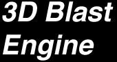
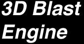
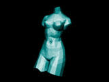

Description:
What is 3D Blast:

Features:
- 256 colors rendering.
- any rendering size up to 4000x4000.
- photographic or orthographic projection.
- Rendering modes include: Points, WireFrame, Ambient, FlatShadedLocal, FlatShadedReal, GouraudShaded and Textured.
- Classic Painter's algorithm or Z-Buffer algorithm for faces sorting.
- Up to 65000 faces per object.
- DXF import routines.
- Pict to texture import routines.
- Routines to save and load objects in resources.
Performances:
| Rendering mode: | FPS: |
| WireFrame | 20.45 |
| Real flat shaded | 18.30 |
| Textured | 16.93 |
System requirements:
- PowerPC processor MacOS system.
- System 7.1 or later.
Downloading the Dev. Kit:
| Content: | Version: |
|
|
0.9 |
3D Blast FAQ:
- Is there any limitations with 3D Blast?
So far, 3D Blast does not support 3D accelerators cards. - Can I see an example of use of 3D Blast Engine?
Yes, there test application included in the preversion of the dev. kit. You can also check out the D-Fusion Demo, which uses many other PowerToolBox development kits. - Go there for the general PowerToolBox FAQ.
Please read it before writting to the author.
[ Home | FasterDraw | SpriteDraw | 3D Blast | FasterTime | 2D Transformations | Utilities | FAQ & Credits | License ]